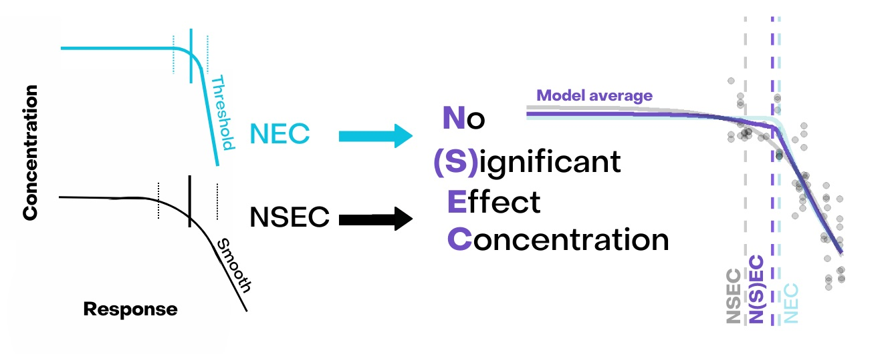
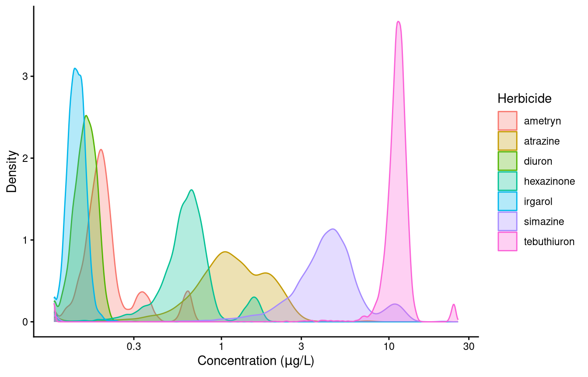

Estimating and comparing the toxicity of seven herbicides
Background
Earlier modules each covered one part of the workflow: what the model set is, how a model average is formed, how a family is chosen, how priors are built. This module runs one analysis from data to reportable estimate, in the order the steps occur, and then applies the same workflow to seven herbicides so their toxicity can be compared.
The workflow is:
Prepare the data and choose the family.
Fit the candidate set.
Check the sampler, and screen out the models that did not sample adequately.
Check the fit of the models that remain.
Report.
A prior check belongs between steps 2 and 3, and module 6 covers check_priors() and the construction of the defaults.
The posterior draws a Bayesian fit produces are useful well beyond a point estimate. They support the study of synergistic and antagonistic effects (Fisher et al. 2019; Flores et al. 2021), the propagation of endpoint uncertainty (Charles et al. 2020; Gottschalk and Nowack 2013), and tests of hypotheses of no effect (Neal 2006). compare_posterior() uses them to compare fits, and the comparison across the seven herbicides at the end of this module is what it is for.
Figure 1
Figure 2
The assumptions the diagnostics test
Convergence is what a Bayesian fit is usually judged on, and it is not the only thing that can be wrong. rhat(), check_chains() and check_sampling() ask whether the sampler explored the posterior. loo and waic rank the candidate equations against one another. None of them asks whether the variability the fitted model implies matches the variability in the data, and a threshold estimate depends on that assumption more than on any other.
The NSEC depends on it most directly. nsec() sets its reference at a quantile of the posterior of the control mean, and the width of that posterior is set by the dispersion the fit estimated at the control. A model simulating more variability at the control than the data show places the reference lower, so the curve crosses it further along and the reported concentration is higher and less protective. A model simulating less variability places the reference higher and returns a lower concentration. The direction is not known in advance, and no convergence diagnostic reveals it. An ECx depends on it less: it is measured from the same control mean, but at a fixed fraction of that mean rather than at a quantile of its posterior, so an error in the variance widens or narrows its interval rather than relocating the reference.
One ratio statistic for the whole fit does not detect this. Every family with a free dispersion parameter, which is gaussian, Gamma, negbinomial, Beta and beta_binomial, estimates that parameter from the same residuals such a statistic summarises. The parameter absorbs the discrepancy, so the fit reports a ratio near 1 while simulating the wrong spread at the concentrations that determine the estimate. The check is therefore made within concentration groups, which is what check_fit() does, and step 4 runs it.
The data
The data are from Jones and Kerswell (2003) and ship with bayesnec, so nothing has to be read from a file.
Figure 3
Figure 4
The response is the maximum effective quantum yield, \(\Delta F / Fm'\), of symbiotic dinoflagellates in the tissue of the coral Seriatopora hystrix, calculated from chlorophyll fluorescence measured with a DIVING-PAM fluorometer (Jones and Kerswell 2003; Jones et al. 2003). Corals were exposed for 10 hours to eight herbicides at concentrations from 0.3 to 1000 \(\mu g L^{-1}\). Ioxynil is excluded here because it produced no adequate response at the highest concentration, leaving seven. ?herbicide documents the columns and the provenance of the response.
Figure 5: The ametryn series, on a logarithmic concentration axis.
The response is flat across the lowest concentrations and then declines. The series has 8 distinct concentrations, which is the number of points from which a curve’s shape has to be identified, and it is a constraint on which equations the design can support. Mean yield is 0.013 at the highest concentration against 0.678 at the lowest.
The scale of the response
Choosing a family is a statement about what kind of quantity the response is: the values it can take, the bounds it cannot cross, and how its variance behaves as its mean changes. Module 5 sets out the families bayesnec supports and what each assumes.
fvfm is a ratio of chlorophyll fluorescence yields. It is bounded by 0 and 1 and it is continuous, which is the Beta case rather than the binomial one: a proportion of this kind is not a count of successes out of a known number of trials, and there is no denominator to supply.
Beta estimates a dispersion parameter, phi, from the data, so there is no over-dispersion decision to take here. The family already has a free parameter for the spread and the fit will estimate it. dispersion() is defined only for poisson and binomial, the two families whose variance is fixed by the mean, which is why module 5 runs that screen and this module does not.
What has to be checked is the one thing Beta cannot accommodate, which is a value outside its support. The family is supported on the open interval (0, 1), so a value recorded as exactly 0 or 1 lies outside it.
range(ametryn$fvfm)
[1] 0.0 0.7
Ametryn reaches neither boundary. Several of the other herbicides do: 10 of irgarol’s readings are exactly zero, so the family cannot be chosen without inspecting the response. bayesnec substitutes for both bounds, a zero becoming one tenth of the smallest non-zero value and a one being reduced by an absolute 0.001, and bnec_record() reports after the fit whether anything was altered. A series with several concentrations at a boundary is then being modelled through that substitution rather than as recorded. Where zeros are part of the process rather than a recording floor, module 5 covers the hurdle and zero-inflated families that model them explicitly.
fam <-Beta(link ="identity")
bnec() sets link = "identity" by default on every family, so that top, bot and nec are estimated on the scale of the response and remain directly interpretable. It is written out here for clarity. Supplying a family with a different link overrides that default, and the model then fits a non-linear curve to the transformed mean rather than to the mean, with the parameters no longer on the response scale.
The scale of the predictor
The concentrations run from 0.1 to 300, a factor of 3000, in roughly even steps on a logarithmic scale. The predictor is logged in the formula.
The predictor enters the equations directly, so a transform changes the shape being fitted and not merely the axis: the same equation describes a different curve in concentration and in log(concentration). The default priors are also scaled from the predictor, so a transform rescales them. Neither consideration settles the question in general, and which scale samples better on a given dataset is an empirical matter. Here the series was designed as a logarithmic dilution, and a logarithm is what makes its steps even.
A logged predictor spanning -2.3 to 5.7 takes negative values, which excludes the equations that raise the predictor to a fractional power. Every estimate is returned on the logged scale unless xform is supplied, and step 5 returns them.
2. Fitting the candidate set
The whole decline set is fitted in one call, under the family chosen in step 1. model = "decline" requests the equations that describe a declining response, of which there are 14 currently in bayesnec. The remaining equations describe hormesis, a response that rises above the control before it falls, and there is no evidence of hormesis in these data.
The settings below are deliberately underbnec()’s defaults, and that is a decision made for this module rather than advice. These data are well behaved at the defaults and every equation the design supports passes the screen there, so a fit made at the defaults produces no screen failure to examine. Running short guarantees that some equations fail, which is what makes steps 3 and 5 a demonstration rather than an assertion. The settings are raised in step 3, and every estimate reported in step 5 comes from the fit made there.
m7_am_reduced <-bnec(fvfm ~crf(log(concentration), model ="decline"),data = ametryn, family = fam,iter =4000, chains =2, seed =17)save(m7_am_reduced, file ="fits/m7_am_reduced.RData")
load("fits/m7_am_reduced.RData")
Compare the retained draws and not iter. iter counts warmup as well as sampling, and the fraction discarded is a choice each package makes for itself. bayesnec takes chains = 4 and iter = 1e4, and sets warmup to floor(iter / 5) * 4, discarding four fifths and retaining 8000 draws. The call above sets iter to 4000 with two chains, and the same warmup rule leaves 1600. For comparison, brms discards half rather than four fifths, so its own defaults of iter = 2000 over four chains retain 4000, which is more than this call from a quarter of the iterations. A number of iterations means nothing until the warmup rule and the chain count are stated beside it.
Where a fit is genuinely marginal, two arguments are the ones to reach for. iter and warmup come first when Rhat is marginal or the effective sample size is low, because a model with a poorly identified parameter may need more draws. control = list(adapt_delta = 0.99, max_treedepth = 12) comes next: raise adapt_delta when there are divergent transitions and max_treedepth when the sampler reports hitting it. Both increase runtime and neither corrects a misspecified model.
The set as fitted
Two mechanisms reduce the requested set. Some equations are excluded before fitting, because they are invalid for the family or the predictor. Others are attempted and fail to fit, which happens with complex non-linear models and particularly with those that have many parameters. bnec_record() reports both, so neither has to be reconstructed from the fitted object.
rec <-bnec_record(m7_am_reduced)rec$excluded
model
1 neclin
2 ecxlin
3 ecxsigm
reason
1 decays by subtraction, so its mean is unbounded below for beta with an identity link
2 decays by subtraction, so its mean is unbounded below for beta with an identity link
3 raises the predictor to a fractional power, which is undefined for negative predictor values
requested is partitioned exactly by attempted and excluded$model. An equation that was attempted and failed to fit stays in attempted.
Two rules apply here. neclin and ecxlin decay by subtraction rather than by an exponential factor, so their fitted mean is unbounded below and cannot be held inside the (0, 1) interval a Beta mean occupies under an identity link. And the predictor is log(concentration), which is negative below a concentration of 1, so the equations that raise the predictor to a fractional power cannot be evaluated. ?models sets out these rules and the others.
failed_models() names the equations that were attempted and did not fit, and records the priors and initial values each was given, which are built inside bnec() and otherwise unrecoverable.
names(failed_models(m7_am_reduced))
[1] "ecxll5"
substitutions reports the changes check_data() made to the response because the family cannot represent a value as recorded.
rec$substitutions
variable rule n_rows from to reason
zero response shifted off zero 12 0 0.001 a beta distribution cannot represent a zero
remedy
zero zero_inflated_beta()
This is the evidence for the boundary check in step 1: on a series that does reach 0 or 1 this element names each altered value, so a methods section can state what was modelled rather than leaving a reader to assume it was the data as measured.
Model weights
summary() reports the set as a whole.
summary(m7_am_reduced)
Loading required namespace: rstan
Object of class bayesmanecfit
Family: beta
Links: mu = identity
Number of posterior draws per model: 1600
Model weights (Method: pseudobma_bb_weights):
waic wi
nec3param -451.02 0.03
nec4param -456.61 0.04
ecxexp -320.58 0.00
ecx4param -465.16 0.41
ecxwb1 -443.23 0.01
ecxwb2 -461.28 0.11
ecxwb1p3 -323.21 0.00
ecxwb2p3 -446.88 0.01
ecxll4 -465.05 0.38
ecxll3 -432.45 0.00
Summary of weighted N(S)EC posterior estimates:
NB: Model set contains a combination of ECx and NEC
models, and is therefore a model averaged
combination of NEC and NSEC estimates.
Estimate Q2.5 Q97.5
N(S)EC -1.65 -2.15 -0.45
Bayesian R2 estimates:
Estimate Est.Error Q2.5 Q97.5
nec3param 0.99 0.00 0.99 0.99
nec4param 0.99 0.00 0.99 0.99
ecxexp 0.89 0.01 0.87 0.91
ecx4param 0.99 0.00 0.99 0.99
ecxwb1 0.99 0.00 0.98 0.99
ecxwb2 0.99 0.00 0.99 0.99
ecxwb1p3 0.93 0.01 0.90 0.96
ecxwb2p3 0.99 0.00 0.99 0.99
ecxll4 0.99 0.00 0.99 0.99
ecxll3 0.99 0.00 0.98 0.99
1 model(s) failed to fit: ecxll5
See ?failed_models for the priors and initial values used.
Warning in print.manecsummary(x): control observed/simulated ratio beyond 1.15 (see ?check_fit):
- nec3param
- nec4param
- ecxexp
- ecx4param
- ecxwb1
- ecxwb2
- ecxwb1p3
- ecxwb2p3
- ecxll4
- ecxll3
This is a modelling result rather than a fault; inspect with check_fit().
wi is the model weight: the share of the model-averaged prediction each candidate contributes, summing to one across the set. The weights come from PSIS-LOO, with loo_model_weights() consuming the loo objects brms computes for each fit. Where a model reports Pareto k values above 0.7 for a few observations, brms warns, and the weights remain usable while the estimates behind them are flagged as unreliable at those points. That belongs in a methods statement alongside the weights themselves.
3. Sampler diagnostics and screening
Every equation in the fitted set produced draws; the ones that did not are in failed_models(). The diagnostics here establish whether those draws describe the posterior adequately. Whether a model fits the data is a separate question, answered in step 4.
check_sampling() reports per candidate model, so the whole set is screened in one call rather than model by model.
The table gives one row per fitted model with three diagnostics: the largest Rhat, the smallest effective sample size, and the number of divergent transitions. Each is compared against a cutoff, and failed is TRUE where any of the three is missed.
The cutoffs are arguments to check_sampling() and can be changed. The Rhat default of 1.01 and the ESS default of 400 follow published recommendations (Vehtari et al. 2021); the divergence default of 10 does not. Stan’s own guidance is that any divergence means the sampler failed to explore the posterior. The default of ten is a package convention rather than a published recommendation, because these non-linear models commonly produce a small number of divergent transitions near a parameter boundary, as ?check_sampling describes.
Read min_ess rather than min_ess_ratio when deciding. The 400 is an absolute floor, below which the Rhat and ESS estimates are themselves unreliable, and it corresponds to 100 draws per chain at the four chains bnec() fits by default. Both the ESS and the divergence cutoffs are absolute counts, and the number of draws changes what each of them demands, in opposite directions. At the 1600 draws retained here a model must reach an efficiency ratio of 0.250 to clear 400, against 0.050 at the default 8000, so the ESS cutoff is harder to clear at these settings. Ten divergent transitions, on the other hand, is 0.62 per cent of the retained draws here and 0.125 per cent at the default, so at an equal divergence rate the same fit produces more of them at the defaults and that cutoff is harder to clear there. Neither setting is uniformly stricter, and a screen result is therefore a property of the settings as much as of the model. State the settings used.
Kinds of failure
The three kinds of failure are distinguished by which thresholds an equation missed, and whether divergent transitions are among them.
An equation that misses the effective sample size or Rhat threshold with no divergent transitions has been sampled from a posterior the sampler could traverse. It was not sampled for long enough to describe that posterior, and both diagnostics are themselves estimated less precisely from fewer draws. Refitting with a higher iter is what such an equation needs, and it is expected to pass once it has them, so excluding it on this evidence would be premature.
Divergent transitions are different, because they describe the posterior rather than the run. A divergence is recorded when the sampler’s trajectory through parameter space goes numerically unstable, which happens where the posterior has curvature too sharp for the step size adapted during warmup. Taking more draws samples the same surface for longer and does not smooth it. Where such an equation is also the most heavily parameterised in the set, the usual explanation is that the design does not support it.
check_sampling() reports only the equations that produced draws, so ecxll5 is added above from failed_models(): it is the equation with the most curve parameters in the set, at 5 against 4 for any equation that did fit.
The series has 8 distinct concentrations, and an equation with more curve parameters than the design can determine has a posterior that is flat in some direction. Sampling a flat direction for longer does not locate a maximum that is not there. Adjusting the settings to retain an equation in that position does not address the problem: the fit is not failing because it was run badly, but because the experiment does not contain the information the equation needs. Report it as excluded, and say why.
Where an equation’s Rhat or effective sample size sits at the threshold, which side of it the equation falls on is sensitive to the seed, and another run may place it on the other side. Any threshold applied to an estimated quantity behaves this way. It is why the thresholds have to be reported with the result, and why the screen names every threshold an equation missed rather than only the first.
Screening the model set
Only models that pass the sampler diagnostics are retained. The screen reads the sampler and nothing else: whether an equation reproduces the data is a separate question, and removing an equation for that silently would hide the discrepancies the fit checks exist to show.
screened_reduced <-screen_models(m7_am_reduced)
Dropping 2 of 10 candidate models that failed the sampler screen:
- nec4param: ESS 368.7
- ecxwb1: ESS 344.1
Warning:
2 (2.1%) p_waic estimates greater than 0.4. We recommend trying loo instead.
Warning:
2 (2.1%) p_waic estimates greater than 0.4. We recommend trying loo instead.
Warning:
2 (2.1%) p_waic estimates greater than 0.4. We recommend trying loo instead.
Warning:
3 (3.1%) p_waic estimates greater than 0.4. We recommend trying loo instead.
Warning:
2 (2.1%) p_waic estimates greater than 0.4. We recommend trying loo instead.
Warning:
3 (3.1%) p_waic estimates greater than 0.4. We recommend trying loo instead.
screen_models() runs the same diagnostics as check_sampling(), drops what failed, and reports which models were removed and why, one line per model naming every threshold it missed. An exclusion step that leaves no record is not reproducible, which is why the message is on by default and why quiet = TRUE should not be used in an analysis that will be reported.
If every candidate fails, screen_models() stops with an error listing the reasons rather than returning a meaningless average, which signals a return to step 2 rather than a loosened threshold. If none fails, it says so and returns the set unchanged.
amend() does the work, and it is the only route by which a model leaves a bayesmanecfit. The weights of a screened set therefore have to be read from the screened fit rather than rescaled by hand.
Raising the settings
The screen has identified the equations that did not sample adequately. For those that reported no divergent transitions, the remedy is the one step 2 deferred: fit again at bnec()’s defaults.
m7_am_fit <-bnec(fvfm ~crf(log(concentration), model ="decline"),data = ametryn, family = fam, seed =17)save(m7_am_fit, file ="fits/m7_am_fit.RData")
All 10 candidate models passed the sampler screen (Rhat <= 1.01, ESS >= 400, divergences <= 10).
The comparison between the two runs is the point of having made both. Every equation the screen removed at the reduced settings (nec4param, ecxwb1) passes here, on the same data and the same priors, because it was given more draws. Both had missed the effective sample size threshold with no divergent transitions, which is the first kind of failure, and more draws corrected them as that diagnosis predicted. ecxwb1 rose from an effective sample size of 344 to 2218.
No equation in either run recorded a divergent transition, so the second kind of failure does not arise on these data. Where it does, more sampling does not change the curvature the sampler could not traverse, and because the divergence cutoff is an absolute count, a longer run reports proportionally more divergences at an unchanged rate. Raising the settings makes that failure easier to see, not harder.
ecxll5 still fails to fit at all, which is the third kind and the one the parameter count anticipated. More sampling did not make it fit and would not be expected to.
The priors and initial values a failed equation was given are retained on the failed fit and are the starting point for an adjustment if one is wanted, as ?failed_models sets out.
4. Fit diagnostics
The sampler diagnostics indicate whether the sampler explored the posterior adequately. They say nothing about whether the model fits. Two checks answer different questions: pp_check() overall, and check_fit() within concentration groups.
Both are applied to the highest-weighted model of the screened set, which contributes most to the reported estimate and is therefore the one whose fit matters most. pull_best() returns it as a bayesnecfit, and returns a bayesnecfit unchanged, so a set the screen reduced to a single equation needs no separate handling.
best_fit <-pull_best(fit_screened)
Highest-weighted model is ecxll4, holding 0.417 of the weight of 10 candidate models.
Pulling out model(s): ecxll4
The weight is reported with the number of candidates it was selected from, because the two together are what say whether the selection means anything. The highest weight of a flat set of ten is little more than the equal share of 0.1, and one such equation describes the model-averaged estimate hardly at all. Read it against the weights summary() reported in step 2.
pp_check() asks whether data simulated from the fitted model resemble the data observed. Pooled over the whole dataset the comparison is weak for concentration-response data, because a model can match the pooled distribution while being wrong at every concentration, so it is grouped by the predictor here.
pp_check(best_fit, type ="dens_overlay_grouped", group ="concentration")
Using 10 posterior draws for ppc type 'dens_overlay_grouped' by default.
Figure 6: Observed and simulated response densities within each concentration.
The dark line is the observed density of the response within each concentration group and the light lines are the same quantity simulated from the fit. The response is continuous, so a density overlay is the appropriate display; a discrete response takes type = "bars_grouped" instead, which is what module 5 uses for its count example.
Location is reproduced: each observed density sits within the spread of the simulated ones, and its position follows the decline across the series. The observed curves are the more irregular of the two, because a kernel density estimated from 12 observations resolves individual values as separate modes, and that is a property of the display rather than evidence against the fit.
Width is the other thing to read, and it is where these data depart from the fit. The simulated densities are visibly the wider at the low concentrations and the narrower at the high ones. Judging that by eye from 12 observations is unreliable, which is what check_fit() puts a number on.
check_fit() tests something narrower: whether the model reproduces the observed variability and the observed level locally, within each concentration group, with the control flagged.
The control is the lowest value of the predictor, which is bayesnec’s convention throughout. Both estimators read their reference from the posterior of the fitted mean there: nsec() sets its significance reference from it, and every ECx is measured from it as well. Control variability therefore propagates into every threshold the analysis reports, not only the no-effect concentration. An experiment whose lowest treatment is not a control is being analysed on that assumption and should say so.
Identifying the control by position rather than by value keeps the convention intact under a common preparation. Analysis is often done on a log scale, and a small constant is added to the concentrations so that a zero control can be plotted and fitted. Whether the control is entered as 0, or as 0.001, or as one tenth of the lowest exposure, it remains the lowest value in the series and is therefore still the control. These data have no zero concentration, so the question does not arise and the lowest tested concentration is the reference.
For a bayesmanecfit it returns every group of every candidate model, which is more than can be read at once. Two views are useful. The first is the control row of each model, which is the row both estimators read their reference from.
cf <-check_fit(fit_screened)cf[cf$control, ]
model wi group n obs_mean sim_mean mean_ratio ppp_mean obs_sd sim_sd sd_ratio ppp_sd
1 nec3param 0.033 0.1 12 0.678 0.647 1.049 0.035 0.014 0.046 0.305 1.000
9 nec4param 0.035 0.1 12 0.678 0.647 1.048 0.039 0.014 0.047 0.300 1.000
17 ecxexp 0.000 0.1 12 0.678 0.758 0.895 0.969 0.014 0.098 0.143 1.000
25 ecx4param 0.379 0.1 12 0.678 0.681 0.996 0.562 0.014 0.043 0.323 0.999
33 ecxwb1 0.012 0.1 12 0.678 0.695 0.975 0.826 0.014 0.049 0.289 1.000
41 ecxwb2 0.106 0.1 12 0.678 0.659 1.030 0.131 0.014 0.045 0.311 1.000
49 ecxwb1p3 0.000 0.1 12 0.678 0.636 1.067 0.066 0.014 0.080 0.175 1.000
57 ecxwb2p3 0.018 0.1 12 0.678 0.672 1.009 0.394 0.014 0.044 0.317 1.000
65 ecxll4 0.417 0.1 12 0.678 0.680 0.998 0.535 0.014 0.044 0.322 1.000
73 ecxll3 0.000 0.1 12 0.678 0.694 0.977 0.814 0.014 0.045 0.315 1.000
control
1 TRUE
9 TRUE
17 TRUE
25 TRUE
33 TRUE
41 TRUE
49 TRUE
57 TRUE
65 TRUE
73 TRUE
The control group is flagged. nsec() reads its reference from the
control, so this is the row most likely to move a reported
no-effect concentration. See ?check_fit.
A continuous response has genuine residual variability at every concentration, so obs_sd, sim_sd and the ratio between them are all finite and informative, and ppp_sd is not forced to 0 or 1 by construction as it can be for a binomial response near total mortality.
Read ppp_mean and ppp_sd rather than the ratios. The posterior predictive p-value is mean(sim >= obs), so a value near 0.5 says the observed statistic sits in the middle of what the model simulates and a value near 0 or 1 says it sits in a tail. ?check_fit records the case in which a model holds high weight because it fits the bulk of the curve while fitting the control badly, which is what this view is for, and it is the case these data present.
The second view is the full table for a single model, read when one candidate is in question.
cf_best <-check_fit(best_fit)cf_best
group n obs_mean sim_mean mean_ratio ppp_mean obs_sd sim_sd sd_ratio ppp_sd control
1 0.1 12 0.678 0.680 0.998 0.535 0.014 0.044 0.322 1.000 TRUE
2 0.3 12 0.616 0.615 1.001 0.486 0.019 0.046 0.409 0.998 FALSE
3 1 12 0.434 0.421 1.032 0.206 0.037 0.047 0.787 0.827 FALSE
4 3 12 0.167 0.188 0.887 0.947 0.013 0.037 0.355 1.000 FALSE
5 10 12 0.068 0.056 1.210 0.083 0.014 0.021 0.663 0.929 FALSE
6 30 12 0.020 0.021 0.980 0.555 0.013 0.013 0.969 0.531 FALSE
7 100 12 0.016 0.011 1.412 0.092 0.015 0.009 1.585 0.094 FALSE
8 300 12 0.013 0.009 1.442 0.136 0.017 0.008 1.982 0.020 FALSE
The control group is flagged. nsec() reads its reference from the
control, so this is the row most likely to move a reported
no-effect concentration. See ?check_fit.
Location is reproduced at every concentration: mean_ratio runs from 0.887 to 1.442 and no ppp_mean is near either bound. The departure is entirely in scale, and it is systematic rather than confined to one group. obs_sd is close to constant across the series, from 0.013 to 0.037, while sim_sd falls steadily from 0.044 at the control to 0.008 at the highest concentration.
That pattern is a property of the family. A Beta variance is \(\mu(1-\mu)/(1+\phi)\) with a single phi estimated for the whole fit, so the simulated spread is largest where the mean is near the middle of the range and shrinks as the mean approaches zero. The observed spread does not behave that way here, so one phi cannot match both ends of the series: the fit oversimulates variability at the low concentrations and undersimulates it at the high ones. Module 5 covers the dispersion sub-model, written as a term in the formula, which is what lets the spread vary with the predictor instead.
plot(cf_best)
Figure 7: Observed statistics against the 95% span of what the fitted model simulates, by concentration.
The plot shows what the table does not: the magnitude and direction of the discrepancy. Each panel gives the observed statistic against the 95% span of what the model simulates, and a point outside its bar is a group the model does not reproduce. Location and scale are separate panels because they fail independently, and that is what has happened here: every point in the mean panel sits inside its bar while several in the standard deviation panel do not.
The control row is the one the Overview singled out, and on these data it is the worst of the series rather than the best. The model simulates a standard deviation of 0.044 against an observed 0.014, a sd_ratio of 0.322, and a ppp_sd of 1.000, meaning that essentially every simulated draw was more variable than the data.
That has a direction, and it is the one the Overview set out. nsec() reads its reference from the posterior of the control mean, and a fit simulating more variability there than the data show gives that posterior too much width. The reference is placed lower, the curve crosses it further along, and the reported no-effect concentration is higher than the data warrant, and so less protective. An analysis reporting the N(S)EC for these data should state this check and its result, and should consider the dispersion sub-model before the estimate is used.
A group can fall beyond the message’s criterion and inside the plot’s bar, because the two differ: the message flags a posterior predictive p-value outside [0.05, 0.95] and the bars are the 95% span, which is [0.025, 0.975]. Read the message as a prompt to look at the group rather than as a verdict.
5. The reported estimates
summary() returns the retained equations with their weights and the model-averaged estimate.
summary(fit_screened)
Object of class bayesmanecfit
Family: beta
Links: mu = identity
Number of posterior draws per model: 8000
Model weights (Method: pseudobma_bb_weights):
waic wi
nec3param -451.06 0.03
nec4param -456.69 0.04
ecxexp -320.44 0.00
ecx4param -465.13 0.38
ecxwb1 -443.63 0.01
ecxwb2 -461.34 0.11
ecxwb1p3 -323.16 0.00
ecxwb2p3 -447.00 0.02
ecxll4 -465.27 0.42
ecxll3 -432.21 0.00
Summary of weighted N(S)EC posterior estimates:
NB: Model set contains a combination of ECx and NEC
models, and is therefore a model averaged
combination of NEC and NSEC estimates.
Estimate Q2.5 Q97.5
N(S)EC -1.66 -2.14 -0.45
Bayesian R2 estimates:
Estimate Est.Error Q2.5 Q97.5
nec3param 0.99 0.00 0.99 0.99
nec4param 0.99 0.00 0.99 0.99
ecxexp 0.89 0.01 0.87 0.91
ecx4param 0.99 0.00 0.99 0.99
ecxwb1 0.99 0.00 0.98 0.99
ecxwb2 0.99 0.00 0.99 0.99
ecxwb1p3 0.94 0.01 0.90 0.96
ecxwb2p3 0.99 0.00 0.99 0.99
ecxll4 0.99 0.00 0.99 0.99
ecxll3 0.99 0.00 0.98 0.99
1 model(s) failed to fit: ecxll5
See ?failed_models for the priors and initial values used.
Warning in print.manecsummary(x): control observed/simulated ratio beyond 1.15 (see ?check_fit):
- nec3param
- nec4param
- ecxexp
- ecx4param
- ecxwb1
- ecxwb2
- ecxwb1p3
- ecxwb2p3
- ecxll4
- ecxll3
This is a modelling result rather than a fault; inspect with check_fit().
The set mixes threshold and smooth equations, so that estimate is a mixture of NEC and NSEC draws, which is the N(S)EC module 3 defined, and it should not be reported as a NEC.
The scale an estimate is on
The predictor was logged in the formula, so the threshold is returned on that scale. nec(), nsec() and ecx() all take an xform argument to put it back on the measured one.
This bayesmanecfit contains smooth (ecx) models, which have no threshold parameter, so the returned estimate is a weighted mixture of NEC and NSEC draws -- the model-averaged N(S)EC rather than a NEC. See ?nec and summary(), which labels it.
This bayesmanecfit contains smooth (ecx) models, which have no threshold parameter, so the returned estimate is a weighted mixture of NEC and NSEC draws -- the model-averaged N(S)EC rather than a NEC. See ?nec and summary(), which labels it.
Only the second row is on the measured scale. The first is its natural logarithm, and the two are easy to confuse, because a logged value can land in the same numeric range as a concentration: the median of the first row would pass unremarked in a series running from 0.1 to 300. Reporting a logged value as a concentration understates the threshold by a factor of 2.7 for every unit on the logged scale. Where the logarithm is negative the value is not a concentration at all, which is the one case in which the error announces itself. A reported value has to state the scale it is on.
The parameters of the curve
summary() does not report the parameters of the curve itself. curve_params() returns them, one row per parameter per equation, with the model weight beside each row.
Table 1: Fitted curve parameters for ametryn, with the weight of the equation each came from.
curve_params(fit_screened, xform = exp)
model wi dpar link parameter Estimate Q2.5 Q97.5
1 ecxll4 4.171951e-01 mu identity top 0.702409905 0.673394325 0.734096045
2 ecxll4 4.171951e-01 mu identity bot 0.008783056 0.005583625 0.012614853
3 ecxll4 4.171951e-01 mu identity beta 0.261975790 0.158569725 0.369138372
4 ecxll4 4.171951e-01 mu identity ec50 1.339670878 1.163794144 1.514585592
5 ecx4param 3.789986e-01 mu identity top 0.702825640 0.674081856 0.735037377
6 ecx4param 3.789986e-01 mu identity bot 0.008722921 0.005553338 0.012550562
7 ecx4param 3.789986e-01 mu identity beta 0.259280400 0.157464315 0.363335727
8 ecx4param 3.789986e-01 mu identity ec50 1.336456743 1.165854729 1.509917935
9 ecxwb2 1.063291e-01 mu identity top 0.657772365 0.635584658 0.681120591
10 ecxwb2 1.063291e-01 mu identity bot 0.007184491 0.003900357 0.011204553
11 ecxwb2 1.063291e-01 mu identity beta 0.073426013 -0.028279881 0.183671755
12 ecxwb2 1.063291e-01 mu identity ec50 1.006751328 0.872931746 1.140887354
13 nec4param 3.505118e-02 mu identity top 0.646677760 0.626747534 0.666520058
14 nec4param 3.505118e-02 mu identity bot 0.006002212 0.002421994 0.010312821
15 nec4param 3.505118e-02 mu identity beta -0.101976870 -0.195718516 -0.004062701
16 nec4param 3.505118e-02 mu identity nec 0.645714912 0.580452402 0.710416713
17 nec3param 3.289193e-02 mu identity top 0.646568460 0.626932821 0.665982123
18 nec3param 3.289193e-02 mu identity beta -0.215918675 -0.284870326 -0.149748667
19 nec3param 3.289193e-02 mu identity nec 0.599591188 0.532975125 0.659955924
20 ecxwb2p3 1.777026e-02 mu identity top 0.672578515 0.649397042 0.697433147
21 ecxwb2p3 1.777026e-02 mu identity beta -0.088891064 -0.162322028 -0.020640148
22 ecxwb2p3 1.777026e-02 mu identity ec50 0.904889374 0.786859125 1.028684621
23 ecxwb1 1.170612e-02 mu identity top 0.837314370 0.765456546 0.923267105
24 ecxwb1 1.170612e-02 mu identity bot 0.012660553 0.009054751 0.017073639
25 ecxwb1 1.170612e-02 mu identity beta -0.520960155 -0.670037248 -0.356916938
26 ecxwb1 1.170612e-02 mu identity ec50 1.662894071 1.302567708 2.064801398
27 ecxll3 5.773357e-05 mu identity top 0.753593625 0.717594232 0.797983157
28 ecxll3 5.773357e-05 mu identity beta 0.018692647 -0.068720950 0.095071287
29 ecxll3 5.773357e-05 mu identity ec50 1.122455622 0.928137965 1.316125299
30 ecxexp 2.780574e-26 mu identity top 0.284262570 0.263211954 0.307728245
31 ecxexp 2.780574e-26 mu identity beta -0.857620450 -0.945975046 -0.779282778
32 ecxwb1p3 1.200741e-27 mu identity top 0.975830205 0.924418251 0.996332442
33 ecxwb1p3 1.200741e-27 mu identity beta -1.083427950 -1.178969405 -1.003794850
34 ecxwb1p3 1.200741e-27 mu identity ec50 1.245739968 1.023567903 1.579278091
The equations of a set do not share a parameter list, which is why nothing is averaged across them: only the threshold equations estimate nec, and the three-parameter equations have no bot. Averaging a parameter over whichever equations happen to estimate it would average over a different subset for each parameter. The weight beside each row is what makes the table readable, since a row holding a thousandth of the weight describes the averaged curve hardly at all.
xform reaches nec and ec50 and no other parameter, because those two are on the scale of the predictor while top, bot and beta are levels of the response or shape parameters.
Effect concentrations and censoring
The other commonly required endpoint is an ECx, read from the same screened set.
Both are model-averaged over the screened set. Every ECx and NSEC is measured from the control, which is the predicted mean at the lowest concentration in the series, taken per posterior draw. type sets what the decline is measured against: "absolute", the default, takes it against 0, and "range" takes it against the lowest response the curve predicts. The two answer different questions and give different numbers, so the value used has to be stated. ?ecx sets out all four values and what each measures against.
A target the curve never reaches within the tested range returns NA for the affected draws, with a warning naming how many. That is a reportable outcome rather than a failure: it says the design did not reach the effect size asked for. An ECx summarised over the remaining draws is a censored estimate and has to be reported as one, naming how many draws were excluded and that the value is bounded below by the highest concentration tested. Reported without that label it reads as an ordinary estimate and understates the true value.
The complete set of herbicides
Steps 1 to 5 covered one series. The same call is applied to each herbicide in turn, and the seven results are then compared.
Seven herbicides against the decline set is 14 equations each and takes hours, so these fits are not run when this page is built. They are produced by scripts/generate_herbicide_fits.R, which writes the compact results the rest of this module reads, and the fitted objects themselves are too large to keep: the 2023 equivalent was 451 MB. The code shown is the code that was run.
Each of the seven sets is screened on all three sampler diagnostics before it is used, exactly as step 3 screened the ametryn set. The full table is kept rather than only the failures, because the thresholds applied are part of what has to be reported.
Table 2: Number of equations fitted and removed by the sampler screen, per herbicide.
herbicide
equations
removed
ametryn
10
0
atrazine
10
0
diuron
10
0
hexazinone
10
0
irgarol
10
0
simazine
10
0
tebuthiuron
10
0
Table 3
No equation failed the sampler screen.
Equations that produced no draws at all are the separate failure step 3 distinguished, and are reported by failed_models().
Table 4: Equations that failed to fit at all.
herbicide
model
ametryn
ecxll5
atrazine
ecxll5
diuron
ecxll5
hexazinone
ecxll5
irgarol
ecxll5
simazine
ecxll5
tebuthiuron
ecxll5
Do not reach for rhat(fit)$failed in place of check_sampling(): rhat() on a bayesmanecfit returns a list keyed by model name, each element holding the Rhat values and a logical failed, so $failed on the list itself is NULL and silently drops nothing. An earlier version of this module had that defect.
Table 5: Fitted equations and their relative weights, for the effect of seven herbicides on the maximum effective quantum yield of symbiotic dinoflagellates of Seriatopora hystrix.
model
ametryn
atrazine
diuron
hexazinone
irgarol
simazine
tebuthiuron
nec3param
0.032
0.001
0.000
0.000
0.001
0.001
0.014
nec4param
0.033
0.002
0.000
0.000
0.001
0.000
0.003
ecxexp
0.000
0.000
0.000
0.000
0.000
0.000
0.000
ecx4param
0.409
0.193
0.336
0.126
0.314
0.240
0.004
ecxwb1
0.012
0.613
0.198
0.001
0.307
0.117
0.000
ecxwb2
0.109
0.002
0.000
0.018
0.031
0.020
0.298
ecxwb1p3
0.000
0.000
0.000
0.013
0.000
0.017
0.000
ecxwb2p3
0.018
0.002
0.000
0.063
0.002
0.061
0.676
ecxll4
0.387
0.187
0.354
0.130
0.345
0.188
0.005
ecxll3
0.000
0.000
0.111
0.649
0.000
0.355
0.000
The best-fitting equations differ substantially between herbicides. Few show much weight on the threshold models. Among the smooth equations the weights vary widely, with support for more than one in every case.
That is the argument for model averaging in a sentence: there is no single equation that is right for these data, the best one differs by herbicide, and selecting one would discard the uncertainty about which. Averaging propagates it into the estimates instead.
Figure 8: Model-averaged concentration-response curves for seven herbicides, with 95% credible intervals and the observations.
The toxicity estimates
The value reported for each herbicide is the model-averaged posterior combining the NEC parameter from the threshold equations with the NSEC from the smooth ones, which is the N(S)EC step 5 reported for ametryn.
Table 6: Model-averaged no-effect estimates, back-transformed to concentration.
Herbicide
Estimate
Lower 95%
Upper 95%
ametryn
0.193
0.120
0.636
atrazine
1.150
0.290
2.620
diuron
0.155
0.110
0.199
hexazinone
0.633
0.232
1.620
irgarol
0.136
0.107
0.172
simazine
4.340
1.040
11.500
tebuthiuron
11.300
7.200
14.000
These are the estimates that would enter a guideline derivation. In Australia that is the Australian and New Zealand Water Quality Guidelines (ANZG 2018). The NEC has been the established preference for some time (Warne et al. 2015; Warne et al. 2018), and the 2025 revision of the derivation method (Warne et al. 2025) places the NSEC alongside it: the two are now the most preferred statistical estimates, with an ECx at x of 10 or less in the tier below them.
That has a practical consequence for a table like the one above. Because the NSEC sits in the preferred tier, the condition attached to it applies, and an NSEC whose measured effect size exceeds 20% should probably not be used to derive a guideline value. Module 3 covers the ECNSEC, which is the quantity that measures it, and an analysis reporting an N(S)EC for guideline use should report that alongside.

Figure 9
Comparing the posteriors
compare_posterior() extracts the weighted posterior for each fit so they can be compared directly, rather than by asking whether intervals overlap.
comparison names the quantity compared, and takes "nec", "n(s)ec", "nsec", "ecx" or "fitted". "n(s)ec" is used here because these sets mix threshold and smooth equations, so the weighted no-effect posterior is a mixture of both kinds of estimate. Asking for "nec" would compare the threshold parameter alone, over the equations that have one, which is a different quantity and would be a different table.
post <-read.csv("data/herbicide_ne_posterior.csv")ggplot(post, aes(x = concentration, group = model,colour = model, fill = model)) +geom_density(alpha =0.3) +scale_x_continuous(trans ="log", breaks =c(0.3, 1, 3, 10, 30),labels =c(0.3, 1, 3, 10, 30)) +labs(x =expression("Concentration ("*mu*"g/L)"), y ="Density",colour ="Herbicide", fill ="Herbicide") +theme_classic()

Figure 10: Posterior densities of the N(S)EC estimate for each herbicide.
Irgarol, diuron and ametryn are the most toxic and are similar to one another, their densities overlapping substantially. Tebuthiuron is the least toxic, followed by simazine and atrazine, with hexazinone intermediate.
Probabilities of difference
Overlapping densities are a visual impression. compare_posterior() also returns the probability that one estimate is lower than another, computed from the draws.
Table 7: Probability of difference in no-effect toxicity between herbicides, from the overlap in their posterior densities.
herbicide
atrazine
diuron
hexazinone
irgarol
simazine
tebuthiuron
ametryn
0.0217554
0.8103276
0.0531383
0.9192298
0.0112528
0.0096274
atrazine
NA
0.9864966
0.8344586
0.9878720
0.0447612
0.0100025
diuron
NA
NA
0.0150038
0.7325581
0.0107527
0.0093773
hexazinone
NA
NA
NA
0.9866217
0.0165041
0.0097524
irgarol
NA
NA
NA
NA
0.0107527
0.0096274
simazine
NA
NA
NA
NA
NA
0.0435109
This is the practical advantage of having the posterior rather than an interval. The question of whether A is more toxic than B is answered with a probability computed from the draws, without a significance test, and it propagates the uncertainty in the curve shape as well as in the parameters.
Reporting the analysis
The estimates above are the output. What follows is what has to accompany them, because almost every number in this module is a property of a decision as much as of the data.
State the data as analysed: the response, the bounds of its distribution, and any value altered to bring it inside the family’s support. bnec_record() reports the last of these in its substitutions element.
State the family and how it was chosen. Here a continuous response bounded by 0 and 1 gives the Beta family, with the boundary check of step 1 as the evidence. For a count out of a total, report the dispersion screen of module 5 and the probability it returned.
State the candidate set as fitted: the set requested, the equations excluded before fitting and why, and any equation that failed to fit at all. bnec_record() returns the first three and failed_models() the last.
State the sampler settings, including the number of retained draws rather than iter alone, because two of the three diagnostic cutoffs are absolute counts read against them.
State the diagnostic thresholds, all three of them. They are choices, they determine what was excluded, and check_sampling() allows each to be changed.
State which equations were excluded and why, naming the threshold each failed, and distinguishing an equation that would pass with more draws from one the design cannot support. Step 3 separated the three kinds.
State the fit checks and what they showed, not only the sampler diagnostics. check_fit() reports whether the model reproduces the observed variability within each concentration, and the control row is the one both nsec() and ecx() read their reference from. Where the check shows a discrepancy, state its direction, because that determines whether the reported estimate is conservative or not. On the ametryn series above the fit oversimulates variability at the control, which makes the N(S)EC less protective rather than more.
State the estimate settings: sig_val, which sets the NSEC reference and defaults to 0.01; type, which sets what an ECx is measured against and defaults to "absolute"; resolution, the number of grid points a crossing is interpolated on, which defaults to 200; and any xform used to return an estimate to the measured scale.
State the estimates with their intervals and the weights of the retained equations, and the parameters of the fitted curve that the estimates were read from, which curve_params() returns.
Charles, Sandrine, Dan Wu, and Virginie Ducrot. 2020. “How to Account for the Uncertainty from Standard Toxicity Tests in Species Sensitivity Distributions: An Example in Non-Target Plants.”bioRxiv, ahead of print. https://doi.org/10.1101/2020.07.02.183863.
Fisher, Rebecca, Pia Bessell-Browne, and Ross Jones. 2019. “Synergistic and Antagonistic Impacts of Suspended Sediments and Thermal Stress on Corals.”Nature Communications. https://doi.org/10.1038/s41467-019-10288-9.
Flores, F., J. A. Marques, S. Uthicke, et al. 2021. “Combined Effects of Climate Change and the Herbicide Diuron on the Coral Acropora Millepora.”Marine Pollution Bulletin 169: 112582. https://doi.org/10.1016/j.marpolbul.2021.112582.
Gottschalk, Fadri, and Bernd Nowack. 2013. “A Probabilistic Method for Species Sensitivity Distributions Taking into Account the Inherent Uncertainty and Variability of Effects to Estimate Environmental Risk.”Integrated Environmental Assessment and Management 9 (1): 79–86.
Jones, R J, and A P Kerswell. 2003. “Phytotoxicity of Photosystem II (PSII) Herbicides to Coral.”Marine Ecology Progress Series 261: 149–59. https://doi.org/10.3354/meps261149.
Jones, Ross J, Jochen Muller, David Haynes, and Ulrich Schreiber. 2003. “Effects of Herbicides Diuron and Atrazine on Corals of the Great Barrier Reef, Australia.”Marine Ecology Progress Series 251: 153–67.
Neal, Thomas. 2006. “Hypothesis Testing and Bayesian Estimation Using a Sigmoid Emax Model Applied to Sparse Dose-Response Designs.”Journal of Biopharmaceutical Statistics 16 (5): 657–77. https://doi.org/10.1080/10543400600860469.
Vehtari, Aki, Andrew Gelman, Daniel Simpson, Bob Carpenter, and Paul-Christian Bürkner. 2021. “Rank-Normalization, Folding, and Localization: An Improved \(\widehat{R}\) for Assessing Convergence of MCMC (with Discussion).”Bayesian Analysis 16 (2): 667–718. https://doi.org/10.1214/20-BA1221.
Warne, M, GE Batley, RA van Dam, et al. 2018. “Revised Method for Deriving Australian and New Zealand Water Quality Guideline Values for Toxicants – Update of 2015 Version.” Journal Article. Prepared for the Revision of the Australian and New Zealand Guidelines for Fresh and Marine Water Quality. Australian and New Zealand Governments and Australian State and Territory Governments, Canberra, 48 Pp.
Warne, Michael St J., Graeme E. Batley, Rick A. van Dam, et al. 2025. Method for Deriving Australian and New Zealand Water Quality Guideline Values for Protecting Aquatic Ecosystems from Toxicants — Update of 2018 Version. Australian; New Zealand Governments; Australian state; territory governments.
Warne, MStJ, G E Batley, R A van Dam, et al. 2015. Revised Method for Deriving Australian and New Zealand Water Quality Guideline Values for Toxicants. Prepared for the Council of Australian Government’s Standing Council on Environment; Water (SCEW). Department of Science, Information Technology; Innovation, Brisbane, Queensland. 43 pp.